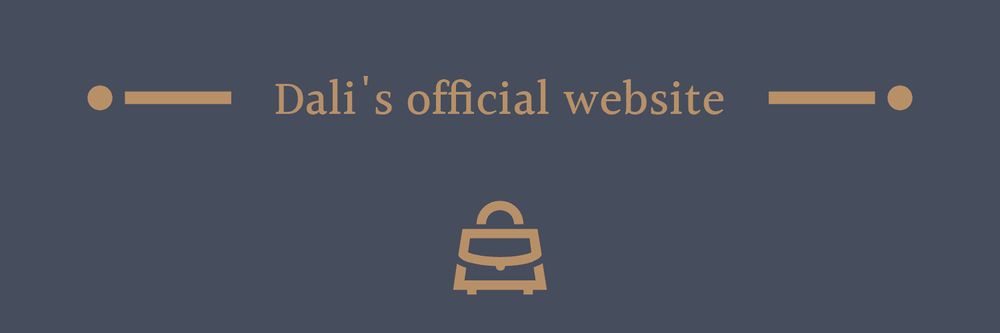

DaLINK
 Dali's official website |
Dali's official website |
|---|---|
| グループのサイト | Dali's official website |
| ブログ | Dali's official website |
| バカ写真SNS | Dali's official website |
| 二郎系ラーメン地図アプリ | Dali's official website |
| 休日日程共有アプリ | Dali's official website |
| サイト | Dali's official website |
| サイト | Dali's official website |